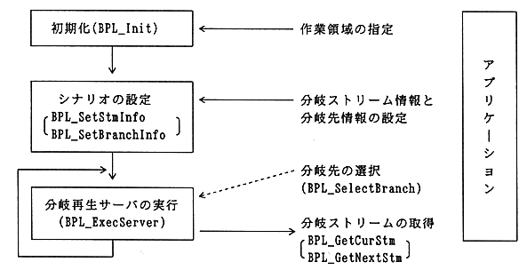

Return to previous page ｜ Return to menu ｜ Go to next page
-
3. Mechanism of branch playback library
-
3.1 Process flow
- The branch playback library reads the stream according to the scenario and notifies the application of the stream handle to be decoded.
The main processing flow is shown in Figure 3.1.

Figure 3.1 Processing flow
Return to previous page ｜ Return to menu ｜ Go to next page